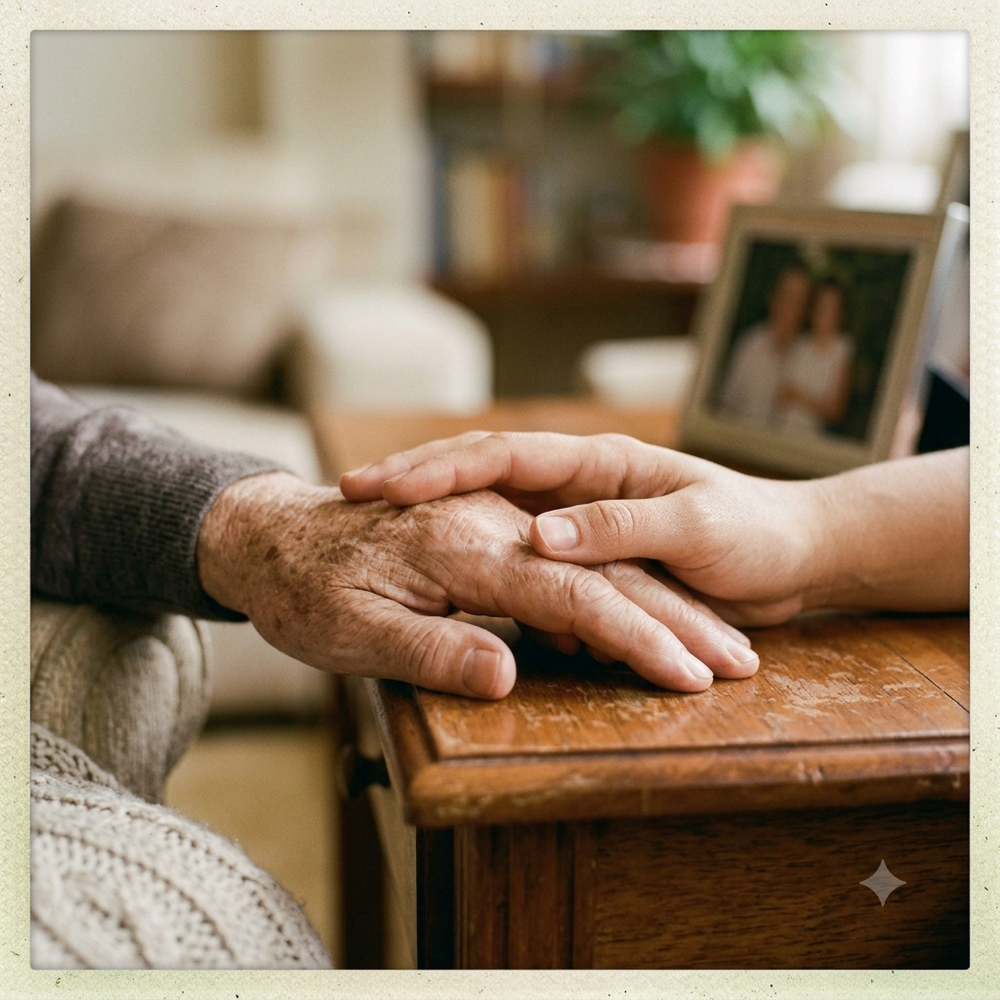
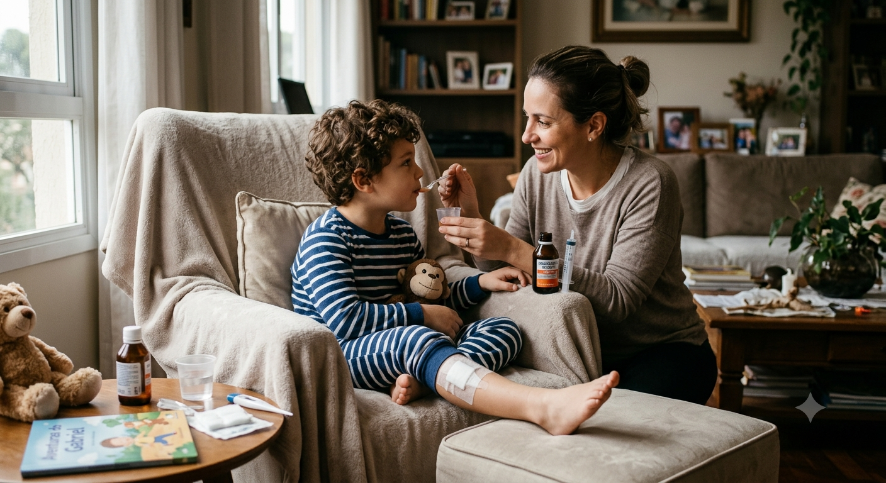

Você fica preocupado quando a pessoa fica sozinha.
Cuidado em casa, no hospital e na rotina
Quando cuidar sozinho pesa, a gente entra para ajudar.
A Cuidar no Lar ajuda famílias que precisam de apoio com idosos, adultos em recuperação ou pessoas que precisam de companhia, atenção e segurança no dia a dia.
Atendimento todos os dias
Combinação clara
Família orientada

Primeiro a gente escuta.
Depois monta o cuidado certo.
Sinais do dia a dia
Tem hora que a família não precisa de culpa. Precisa de apoio.
Banho, remédio, alimentação e horários viraram uma maratona.
Alguém saiu do hospital e ainda precisa de atenção em casa.
A família se reveza, mas todo mundo já está cansado.
O que podemos organizar
Um cuidado para cada história
Não existe “pacote pronto” quando o assunto é gente. Cada casa tem uma rotina, cada pessoa tem um jeito, cada família tem uma necessidade.
Neonatal
Crianças
Adultos
Idosos
Cuidados para todas as idades
Do neonatal à terceira idade, organizamos apoio para cada fase da vida, respeitando a rotina, a segurança e o jeito de cada família.
Acompanhamento para idosos
Para quem precisa de companhia, ajuda com rotina, segurança, alimentação, higiene e atenção durante o dia ou à noite.
Apoio no hospital
Presença para acompanhar, observar, avisar a família e ajudar em momentos em que ninguém quer ficar sozinho.

Recuperação em casa
Ajuda depois de cirurgia, queda, internação, doença ou fase em que a pessoa ainda não consegue fazer tudo sozinha.
Nosso jeito
A técnica cuida do corpo. O carinho cuida do resto.
A gente acredita no cuidado simples, bem combinado e respeitoso. Sem tratar a pessoa como número. Sem deixar a família perdida. Sem prometer milagre.
O básico bem feito ainda vence muita firula moderna: ouvir, chegar no horário, explicar, observar e tratar com respeito.
Escuta antes de indicar
Primeiro entendemos a situação. Depois falamos o que faz sentido.
Linguagem clara
Você entende o combinado sem precisar traduzir termos difíceis.
Cuidado com rotina
O cuidado entra na vida da casa sem virar bagunça.
Respeito pela história
A pessoa cuidada tem hábitos, gostos e memória. Isso vale muito.
“Não é só colocar alguém para ficar junto. É ter alguém que observe, ajude, converse e dê paz para a família respirar.”
É esse tipo de cuidado que buscamos entregar.
Fale com a gente
Conte o que está acontecendo. A gente te orienta.
Não precisa chegar sabendo o nome do serviço. Fale do seu jeito: “minha mãe não pode ficar sozinha”, “meu pai saiu do hospital”, “preciso de alguém à noite”. A gente entende.